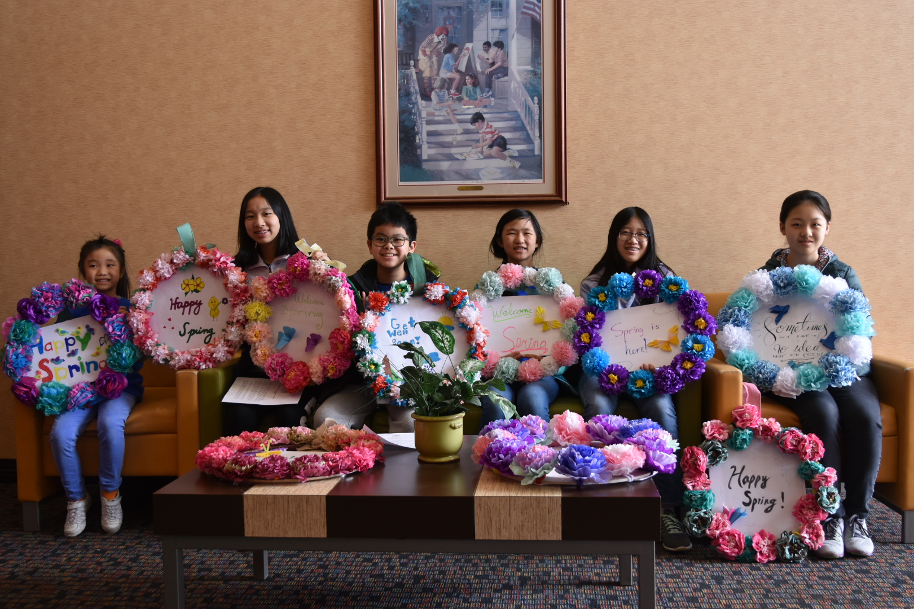
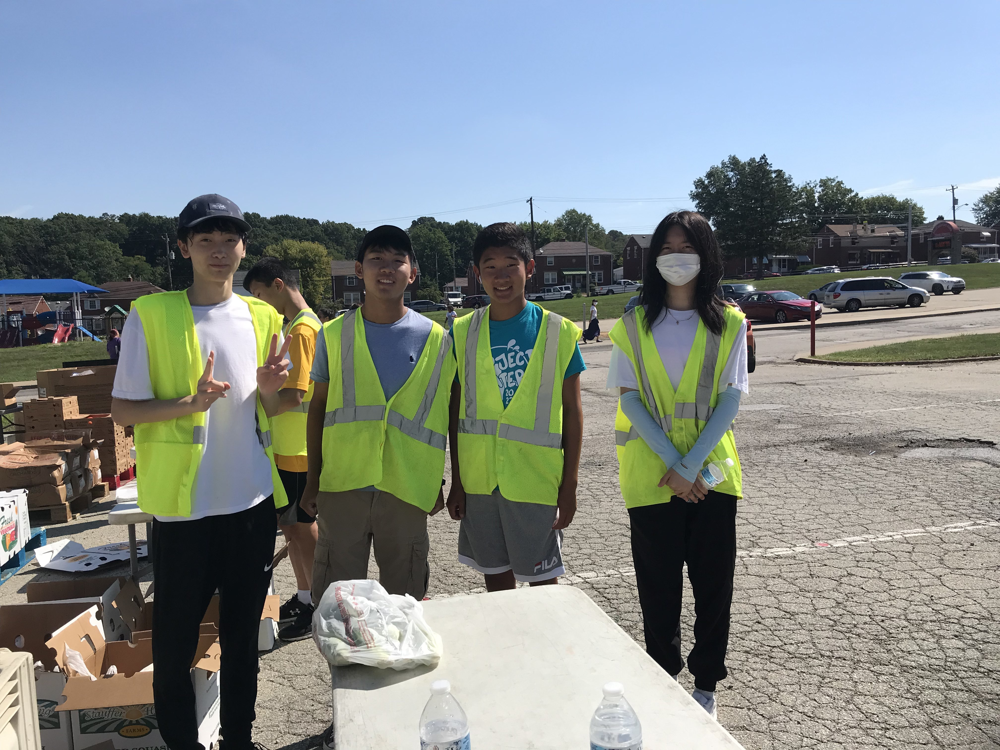
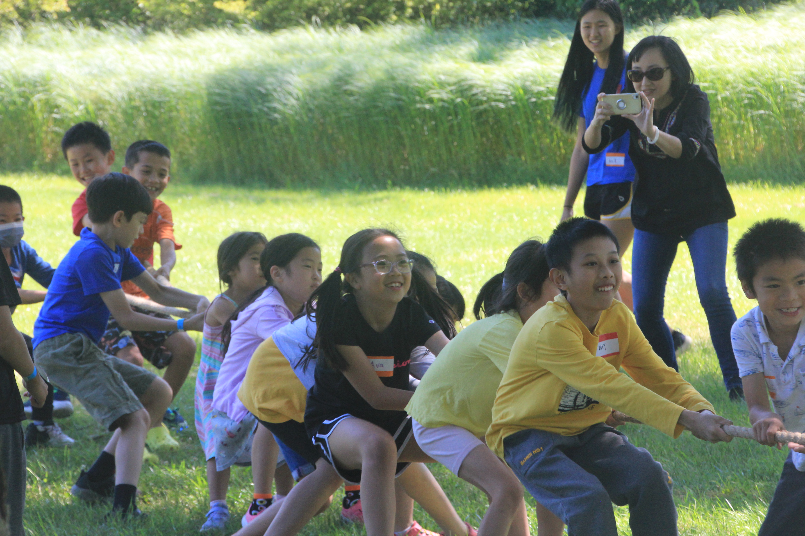

Who We Are
Hands-on learning
Our workshops and forums help kids explore interests, build independence, and develop leadership through culture, service, STEM, arts, and community programs.
ConnectPittsburgh Chinese American Youth Center
Leadership, culture, and community service for Pittsburgh youth. We inspire young people to serve, connect, and care for the community around them.
Pittsburgh Chinese American Youth Center
PCA Youth Center is a 501(c)(3) non-profit organization with adult and student volunteers. We educate and inspire leadership traits in youth, promote cultural exchange and opportunities, and encourage youth to care for the community.
Learn about PCAWho we are
Learn more about PCA Youth Center's workshops, volunteers, Student Council, and membership.

Who We Are
Our workshops and forums help kids explore interests, build independence, and develop leadership through culture, service, STEM, arts, and community programs.
Connect
Volunteer Work
Volunteers help with event setup, tear down, proctoring, community service projects, and local partner efforts. PCA is also a certifying organization for the President's Volunteer Service Award.
Teen Members
Student Council
Student Council members plan events about every two months, meet weekly, and work in teams for event planning, public relations, web, blogging, and general management.
Join Us
Membership
Membership is open to anyone in the Greater Pittsburgh area. The annual household fee supports PCA events, prizes, and operating costs, with member discounts and priority registration.
Email UsReady to take part?
Past projects include book donations for school and community libraries, meals for people experiencing sickness or homelessness, career forums, mentorship events, planting projects, free art and cultural workshops, and Asian American cultural festivals.